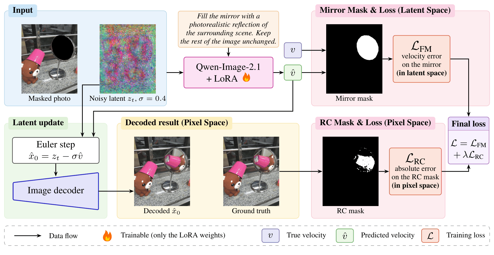
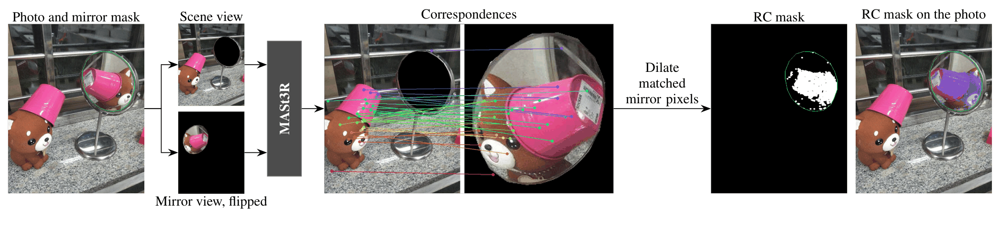
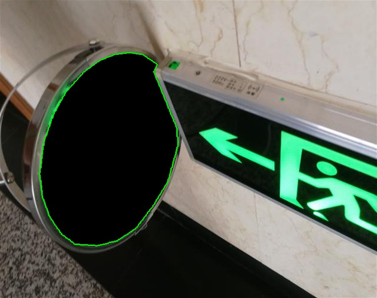
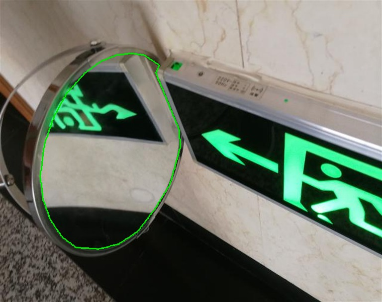
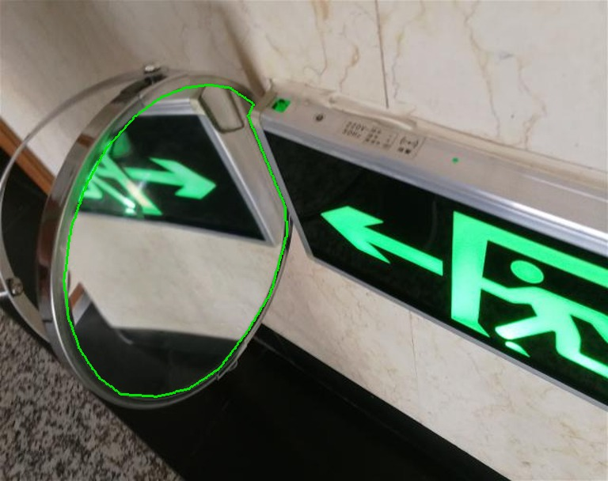
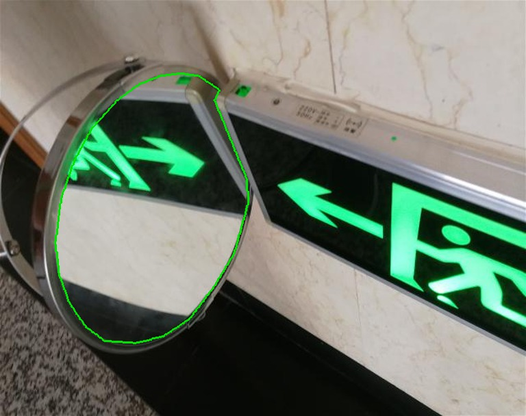
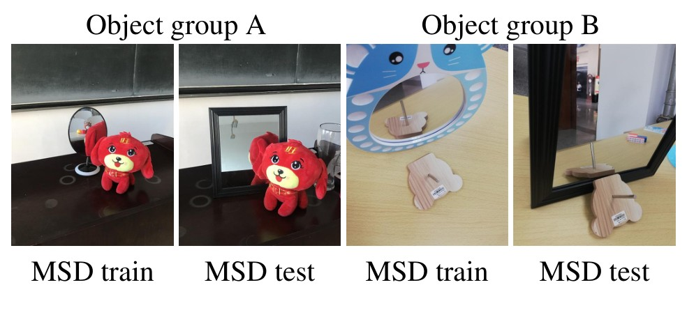

Qualitative Results
MSD-V2 test photos, mirror outlined in green. Drag the slider to compare two methods, pick the methods for each side, and choose a photo below.
Left
Right
A mirror shows the surrounding scene from another viewpoint, so its content must agree with the rest of the photo. Image generators often fill mirrors with plausible content that contradicts the scene. We observe that part of a mirror shows things the photo already shows, which fixes how it must look; we call these pixels constrained. The rest can be filled in many ways.
We therefore fine-tune a pretrained image model with an extra loss on exactly these pixels, which we find by matching the mirror against the rest of the photo, and we compute this loss on the decoded image rather than on latents. We also build MSD-V2, a split of the Mirror Segmentation Dataset with no locations or objects shared between training and test.
Averaged over 5 training runs, our model improves PSNR on the constrained pixels by +3.30 dB over the vanilla model and by +0.71 dB over standard fine-tuning on the same images (p = 0.0011), and places reflected scene points correctly more often (27% against 15%, p = 0.00026).
A mirror has no appearance of its own: it shows the scene from a second, virtual viewpoint. In mirror inpainting, the photo is given and only the mirror is empty, so the mirror holds two kinds of pixels:
They reflect parts of the scene that are also visible in the photo. Their correct values are fixed by the photo, and a wrong value is a real geometric error.
They reflect parts of the scene that the camera never saw. Many fillings are correct, so forcing the model to match one ground truth there only pushes it toward an arbitrary or averaged answer.
The standard fine-tuning loss treats all mirror pixels the same. We keep it, and add a loss that looks only at the constrained pixels.

One training step. The model predicts a velocity from the masked photo, the prompt, and a noisy latent; the flow-matching loss trains it on the whole mirror. One Euler step turns the prediction into a clean estimate, which we decode; the RC loss compares it with the ground truth only on the constrained pixels. Only the LoRA weights are trained.
We fine-tune Qwen-Image-2.1 with LoRA on real mirror photos, using the standard flow-matching loss inside the mirror. This keeps what the model knows about scenes and already improves every quality metric, but reflections are still often geometrically wrong.
We add a loss term on the Reflection Constraint (RC) mask: the mirror pixels that the visible scene determines. We train on images whose mask is reliable, judged by the number of correspondences.
A latent is a compressed code, 16× coarser than the image. We decode the one-step estimate of the clean image and compare it with the ground truth on the image itself. This beats the same loss in latent space by +0.69 dB on the constrained pixels.
The mirror content, flipped, looks like a second photo of the same scene. We split the photo into a scene view, with the mirror blacked out, and a flipped mirror view, and match the two with MASt3R. A mirror pixel with a match shows a scene point that the photo also shows, so the photo fixes its value. We dilate the matched points inside the mirror to get the Reflection Constraint (RC) mask.

The bear and the pink bucket appear in both views, so their reflection is matched. Unmatched mirror pixels, such as the top and edges of this mirror, are left out, since many fillings are plausible there.
On 2,991 rendered scenes of MirrorBench-V2, where the true geometry is known, 72% of the mask pixels are truly constrained and the mask finds 86% of the truly constrained pixels; on scenes that pass our reliability cutoff, these rise to 76% and 94%. To decide which masks to trust, we labeled 393 masks by hand. Keeping masks with at least 2,000 correspondences gives 84% good masks while keeping 83% of the good ones.
MSD-V2 test photos, mirror outlined in green. Drag the slider to compare two methods, pick the methods for each side, and choose a photo below.




Qwen-Image-2.1 fine-tuned with the standard flow-matching loss distorts the reflected arrow, although the photo shows it. With our loss, the arrow is in the right place and direction.
Constrained-pixel metrics use the 108 test photos with a reliable RC mask; PCK@5% (share of reflected scene points placed within 5% of the mirror diagonal, measured with RoMa, independent of the RC mask) uses the 48 photos with enough anchors; the other columns use all 236. Fine-tuned models are the mean over 5 training runs. Sharpness is the variance of the Laplacian (ground truth: 679).
| Method | Constrained pixels (RC mask) | Full mirror | Sharp. | PCK@5%↑ | ||||||
|---|---|---|---|---|---|---|---|---|---|---|
| PSNR↑ | SSIM↑ | LPIPS↓ | DINO↑ | PSNR↑ | SSIM↑ | LPIPS↓ | DINO↑ | |||
| Qwen-Image-2.1 (no fine-tuning) | 14.90 | 0.433 | 0.515 | 0.529 | 12.35 | 0.393 | 0.582 | 0.469 | 672 | 0.065 |
| FLUX.2 [dev] (no fine-tuning) | 12.94 | 0.404 | 0.555 | 0.501 | 10.74 | 0.323 | 0.634 | 0.438 | 812 | 0.066 |
| FLUX.1 Fill [dev] (no fine-tuning) | 15.95 | 0.500 | 0.459 | 0.577 | 13.50 | 0.449 | 0.541 | 0.489 | 557 | 0.085 |
| MirrorFusion 2.0 (fine-tuned on MSD) | 10.13 | 0.292 | 0.636 | 0.409 | 9.73 | 0.298 | 0.648 | 0.412 | 553 | 0.001 |
| Flow-matching fine-tuning, all training images | 17.52 | 0.535 | 0.385 | 0.631 | 14.18 | 0.483 | 0.488 | 0.535 | 434 | 0.109 |
| Flow-matching fine-tuning, reliable-mask images | 17.50 | 0.533 | 0.377 | 0.640 | 14.16 | 0.480 | 0.485 | 0.538 | 439 | 0.151 |
| Ours: flow matching + pixel-space RC loss | 18.21 | 0.549 | 0.371 | 0.663 | 14.59 | 0.494 | 0.481 | 0.554 | 385 | 0.271 |
All models use flow matching on the reliable-mask images and differ only in the pixels of the pixel-space loss. Mean ± standard deviation over 5 training runs.
| Pixel-space loss on | PSNR↑ (constrained) | PCK@5%↑ | Sharpness |
|---|---|---|---|
| None | 17.50 ± 0.25 | 0.151 ± 0.033 | 439 ± 8 |
| Whole mirror | 17.79 ± 0.32 | 0.183 ± 0.024 | 399 ± 8 |
| Random region (same area as the RC mask) | 17.72 ± 0.43 | 0.206 ± 0.026 | 395 ± 19 |
| Rest of the mirror (free pixels only) | 17.66 ± 0.33 | 0.153 ± 0.014 | 401 ± 4 |
| RC mask (Ours) | 18.21 ± 0.16 | 0.271 ± 0.025 | 385 ± 8 |
Ours places reflected scene points correctly more often than all three alternatives. Supervising only the free pixels places no more points correctly than flow matching alone, so which pixels the loss covers matters, not only how many.
29 participants compared Ours with flow-matching fine-tuning (on both training sets) and with FLUX.1 Fill. They preferred Ours for consistency with the scene with probability 66% to 75% against each model (all p ≤ 0.00085, Holm-corrected). For visual quality, they preferred Ours over fine-tuning on all images (79%) and rated it about equal to the other two models, although it is less sharp.

Leaks in the original MSD split: each pair shows a training and a test photo of the same place and objects. A model trained on the left photo has already seen the mirror content on the right.
In the original Mirror Segmentation Dataset split, many test photos show the same room and objects as training photos: 438 of the 608 test images we keep show a location or object that also appears in training. A model can then fill a mirror from memory.
We annotated all 4,007 photos with their location (117) and object group (335), removed 1,296 images that do not fit the task (no visible reflected content, several or curved mirrors, or photos that tie groups together), and split the rest so that no location or object group is shared:
@article{basson2026reflected,
title = {This Should Be Reflected! Teaching Image Models to Fill Mirrors with the Correct Content},
author = {Basson, Ofek and Vainer, Shimon and Hel-Or, Yacov and Fried, Ohad},
journal = {arXiv preprint},
year = {2026},
}